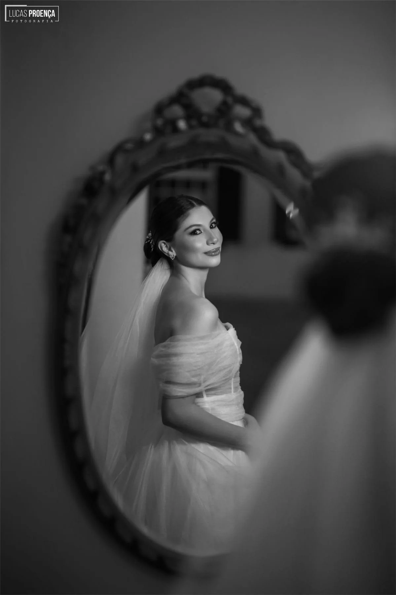

ALLURE

Photography is an austere art: it demands patience, stillness, and an eye attuned to the quiet grandeur of authentic grace.
Photography is an austere art: it demands patience, stillness, and an eye attuned to the quiet grandeur of authentic grace.


Light does not merely illuminate what is seen; it reveals the fleeting, unspoken poetry held within two souls.